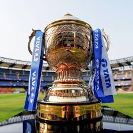
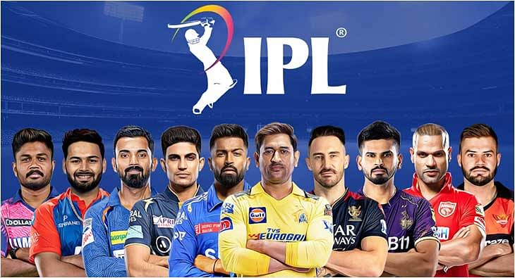
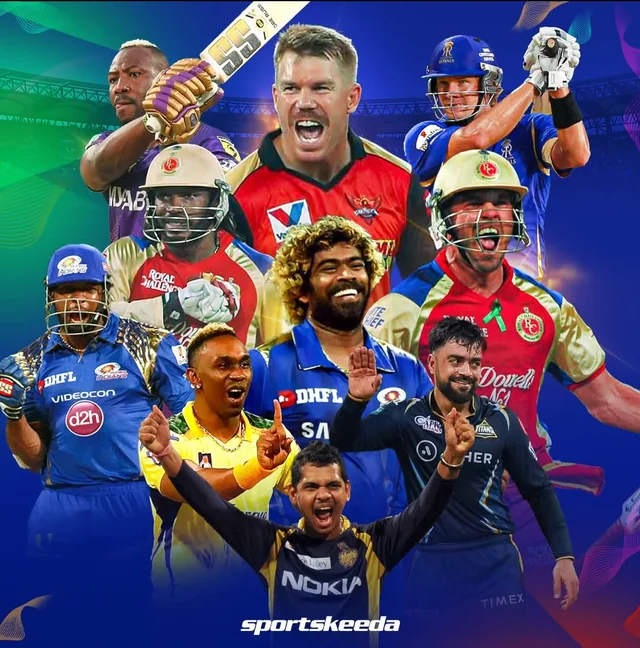
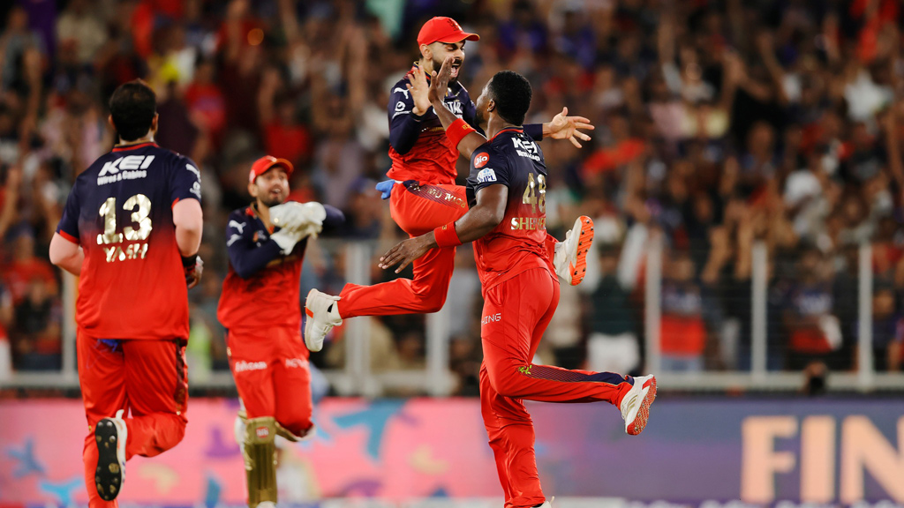
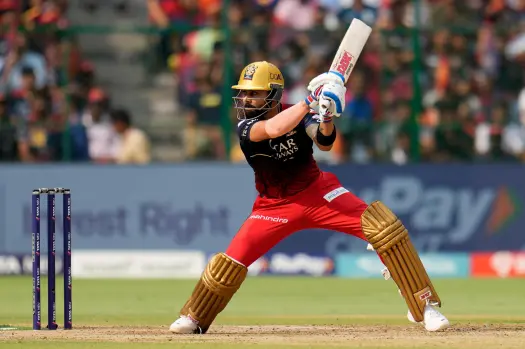

About the IPL
The Indian Premier League (IPL) is a professional Twenty20 cricket tournament organized by the Board of Control for Cricket in India (BCCI). It was launched in 2008 and has become one of the most popular and valuable sports leagues in the world. The tournament features franchise teams representing different cities in India and includes top cricketers from around the globe. The IPL is known for its fast-paced matches, huge fan following, and exciting entertainment. It is usually held every year between March and May and attracts millions of viewers both in India and internationally.

IPL History
The Indian Premier League was founded in 2008 to bring a new and exciting format of cricket to fans. The first season was won by Rajasthan Royals under the captaincy of Shane Warne. Over the years, the IPL has grown into a global sporting event featuring world-class players, packed stadiums, and record-breaking performances. Many young Indian players have used the IPL as a platform to showcase their talent and earn places in the national team. The league has also introduced innovations such as player auctions, strategic time-outs, and advanced technology for match analysis. Today, the IPL is considered one of the most successful and entertaining cricket leagues in the world.

Current IPL Teams
- Chennai Super Kings (CSK)
- Mumbai Indians (MI)
- Royal Challengers Bengaluru (RCB)
- Kolkata Knight Riders (KKR)
- Sunrisers Hyderabad (SRH)
- Rajasthan Royals (RR)
- Delhi Capitals (DC)
- Punjab Kings (PBKS)
- Lucknow Super Giants (LSG)
- Gujarat Titans (GT)

IPL Legend Players
The IPL has featured many legendary players who became icons of the tournament. MS Dhoni is known for his calm leadership, Virat Kohli for scoring the most runs, Rohit Sharma for winning multiple titles, and Chris Gayle for his explosive batting. These players are considered some of the greatest legends in IPL history.

IPL Winners List
- 2008 - Rajasthan Royals
- 2009 - Deccan Chargers
- 2010 - Chennai Super Kings
- 2011 - Chennai Super Kings
- 2012 - Kolkata Knight Riders
- 2013 - Mumbai Indians
- 2014 - Kolkata Knight Riders
- 2015 - Mumbai Indians
- 2016 - Sunrisers Hyderabad
- 2017 - Mumbai Indians
- 2018 - Chennai Super Kings
- 2019 - Mumbai Indians
- 2020 - Mumbai Indians
- 2021 - Chennai Super Kings
- 2022 - Gujarat Titans
- 2023 - Chennai Super Kings
- 2024 - Kolkata Knight Riders
- 2025 - Royal Challengers Bangalore

Important IPL Records
- Most Runs: Virat Kohli
- Most Wickets: Yuzvendra Chahal
- Most Titles: Chennai Super Kings and Mumbai Indians (5 each)
- Highest Team Total: 287/3 by Sunrisers Hyderabad
- Fastest Century: Chris Gayle (30 balls)